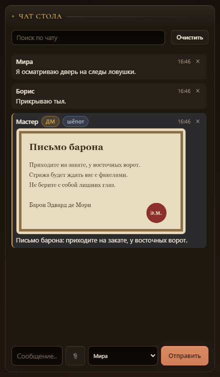
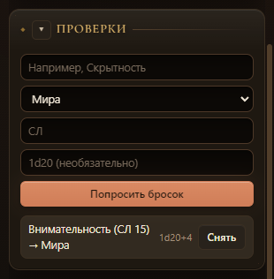
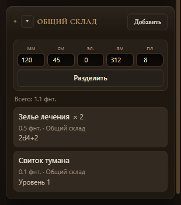
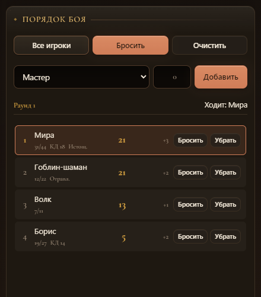
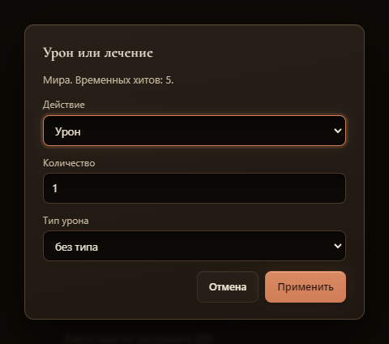
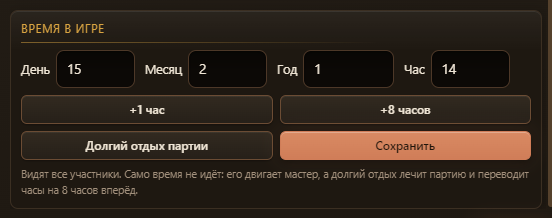

Снимки сделаны в настоящем приложении Electron с тестовой кампанией, мастером и двумя игроками.
Картинка ушла только Мире: мастер и адресат видят подпись «шёпот».

Заявка адресована Мире, у остальных её нет.

Общий склад с кнопкой «Разделить» и остатком после дележа.

Хиты, КД и состояния прямо в строке боя.

Окно с количеством, типом и режимом. Временные хиты и концентрация на сервере.

День, месяц, год и час в настройках кампании.
